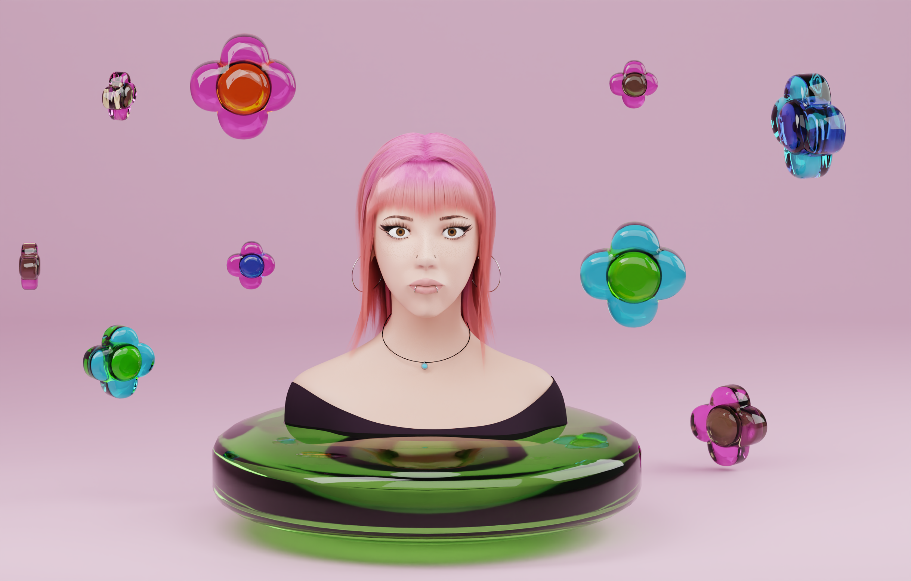
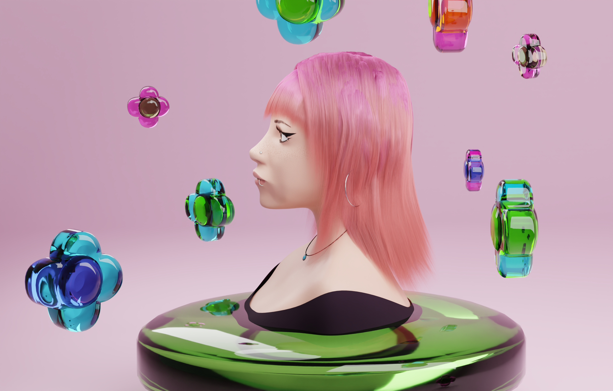
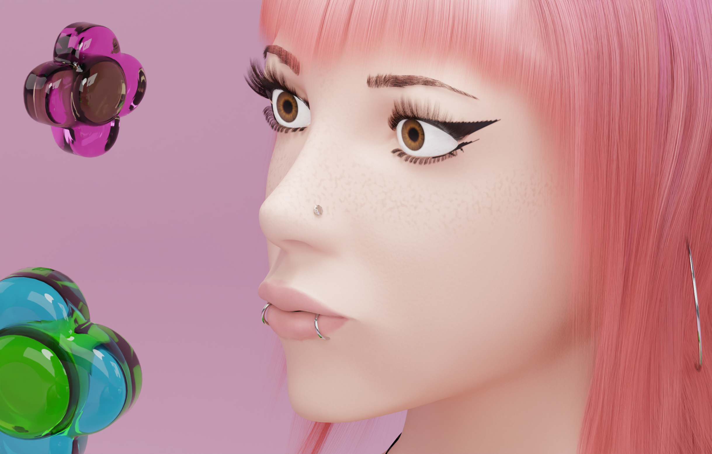

Progetto personale di ritratto 3D realizzato interamente da zero. Ho sviluppato modellazione e topologia del volto, texture, materiali e shading, oltre a capelli, sopracciglia, ciglia e peluria attraverso sistemi particellari. Ho curato autonomamente l'intero workflow, dalla modellazione e dal look development fino all'illuminazione e al rendering finale.
3D Modeling / Topology / Texturing / Shading / Grooming / Lighting / Rendering



